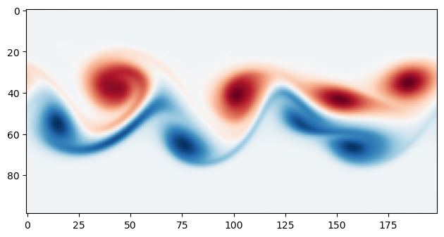

Basic Simulation Setup
Getting a basic simulation up and running is incredibly simple.
The relevant class here is boltzmann.core.Simulation.
This is the central class, it sets up all the data arrays for you, automatically handles shuffling data between
the OpenCL host & device, and runs the actual simulation kernels.
It has a very simple API to construct, run, save and load the simulation.
A minimal example can be found at examples/basic.py. Let’s break down what each step of that example is doing.
Construction
This part constructs the core Simulation object.
from boltzmann.core import Simulation
counts = [200, 100]
omega = 1 / 0.51
sim = Simulation("cpu", counts, omega)
When constructing a Simulation we need to tell it a minimum of three things
The OpenCL device type to target (Can be either
"cpu"or"gpu").The size of the grid in each dimension (
countsin the example above).A collision rate for the BGK collision operator (
omegain the example above).
The dimensionality of the simulation is inferred from the length of the passed grid size.
So [200, 100], for example, would imply a 2D simulation with 200 cells in the x-direction and 100 in the y-direction.
Note
The simulation domain is periodic in all directions.
In order to construct the distribution function data we need also to know the number of velocities in the velocity set. By default the most common values in use are inferred from the dimensionality;
For 2D
q=9so we get the D2Q9 velocity setFor 3D
q=27so we get the D3Q27 velocity set.
If you want to use a different velocity set you can specify q manually.
However, if you specify an unknown combination of D and Q, this will raise an error.
The collision rate omega == 1/tau is the relaxation parameter of the BGK collision operator used to update the fluid after streaming.
Initial Conditions
We could run this simulation now but it would not do anything exciting; the fluid is initially at rest. So let’s go ahead and set some simple initial conditions in order to actually simulate something happening.
The fluid data is housed in a boltzmann.core.Fluid object which is exposed via the simulation’s fluid attribute.
This in turn exposes the density and velocity data as Numpy arrays via the rho and vel attributes respectively.
We can set the initial conditions by setting values in these arrays.
The arrays’ indices are ordered as x, y, z so the first index (“axis 0” in Numpy) corresponds to the x-axis, etc.
For example, in 2D the velocity array will have shape (nx, ny, 2) where in the last index position 0 corresponds to the x component of velocity, and position 1 to the y component.
Bearing this in mind, lets set an initial condition where a horizontal band of the fluid is moving in the positive x-direction. While we’re at it lets slightly perturb the initial density so that the simulation is not perfectly symmetrical.
import numpy as np
sim.fluid.vel[:, 40:60, 0] = 0.1
sim.fluid.rho[:] += 0.1 * np.random.uniform(-1, 1, sim.fluid.rho.shape)
Running
Now we’re ready to run the simulation.
This is achieved simply by a call to the iterate() method, which takes a single parameter: the number of iterations to run.
sim.iterate(3000)
Visualizing
At this point we are ready to visualize the output. Because our data is conveniently exposed as Numpy arrays we can use any Python packages we like to plot or otherwise visualize our simulation results.
Note
The array index/axis ordering intuitively matches our mathematical notation, which makes it nice to work with.
However, methods like matplotlib.pyplot.imshow expect the indicies to be in “matrix” order where rows (i.e. y) come first.
To use these we just need to transpose any arrays we wish to visualize.
Let’s show the results of the simulation above. To produce a nice plot we will calculate the vorticity (curl) of the velocity field and show that.
import matplotlib.pyplot as plt
dvydx = np.diff(sim.fluid.vel[..., 1], axis=0)[:, :-1]
dvxdy = np.diff(sim.fluid.vel[..., 0], axis=1)[:-1, :]
curl = dvydx - dvxdy
plt.imshow(curl.T, cmap="RdBu")
plt.show()
This should produce the following plot:
{kind=link}